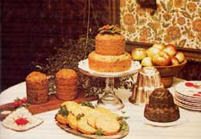
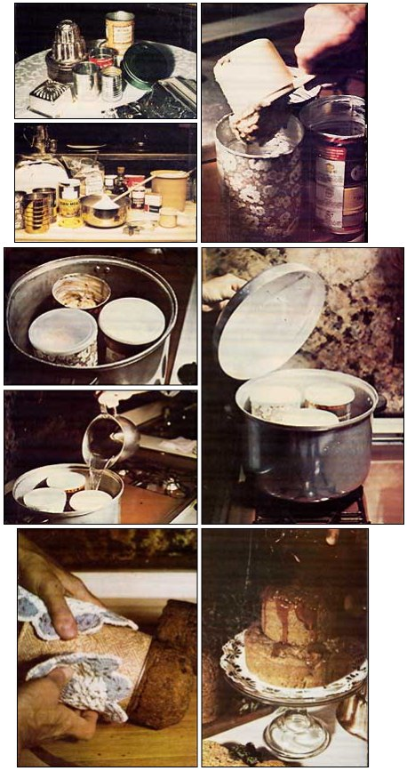

Got a large pot and some empty coffee cans? According to Ruth Ross of Spring Valley, New York, that's all the equipment it takes to cook up some of the richest, moistest, most health ful dessert breads (and dinner breads and any-old-time breads) you've ever laid tongue to!
Moist and delicate, slightly sweet and abounding with bits of fruit . . . it's the fanciest bread of all! You know what I'm talking about: date-nut loaves. The ones that go great with cream cheese . . . and cost about $1.17 a pound. (Then too, who can resist those deliciously tender loaves-in-a-can known as Boston brown bread? Their velvety slices transform a simple baked-bean supper into a glorious meal . . . but at 75 cents a can, what price glory?)
No doubt about it, these wonderfully rich, tawny brown loaves are a sheer delight to eat. But the price! Alas, that's what's hard to swallow.
On the other hand, I can show you how to make these same delicacies at home . . . without an oven, without kneading, without using white flour or sugar, and without the sky-high price tags. All you need are [1] a few one-pound coffee cans, [2] a pot (with cover) large enough to hold them, [3] some cookie cutters to support the coffee tins inside the pot, and [4] a single burner atop a stove. I call this my Basic Steaming Kit, and I use it to steam-bake a variety of delectable breads and cakes for just pennies per loaf.
First, I make up a batter . . . then I grease my coffee cans, fill 'em about halfway (to allow for rising), and cover each one snugly with a plastic lid or aluminum foil. Next, I set the dough-laden containers on cookie cutters in the bottom of a deep pot, fill that pot with just enough water to submerge the cutters, and set the whole works on a burner. Finally, I cover the pot and let it simmer for about two hours . . . until the neat, cylindrical loaves are done to perfection.
Incidentally, it's not necessary to hover over that steaming pot for those two hours either . . . you can go off and read a book, if you want. (It is a good idea, however, to check from time to time to make sure that all the water hasn't boiled away.)
The nice thing about making your own steamed breads is that you control what goes into each loaf. I've adapted my recipes to work with whole grain flours, bran flakes, brown rice, and honey . . . and you, of course, also can substitute whatever ingredients you generally use. (Just remember: old-fashioned roughage-which you don't get in modern-day white flours-and honey-which your body responds to differently than it responds to refined sugar-are better for you.)
Where fruit is called for, feel free to substitute. A windfall of most any kind of fruit can be incorporated in the recipes that follow, and since it will all be cut up, it needn't be blemish-free.
Be resourceful . . . use whatever's most abundant and/or least expensive. If dates skyrocket in price over the holidays, wait till winter's over and grocers have marked the fruit down to half price. (Shelled nuts, too, plummet in price after they've been on the shelves a certain length of time.) In the meantime, use raisins or pitted prunes . . . and if raisins are high this month, leave 'em out of the recipe altogether! The resulting bread will be good, just a little bit smaller in size.
For the biggest money savings of all, buy your ingredients in bulk. You should have very little trouble obtaining staple foods-grains, flours, honey, dried fruit-at half price (or even less) this way.
You say you have no place to put 25-pound sacks of whole wheat and brown rice? No problem. Store them in plain view! We bought some 30-pound-capacity olive containers from the local delicatessen for 50 cents apiece, and the terra-cotta-colored tubs-filled with flour, rice, and whatnot-look right at home in our living room.
You don't have to cook your steamed breads in one-pound coffee cans. Any size container you think would make a good-looking loaf will work. (Remember, though, that batter baked in smaller cans does cook faster.) If you steam your loaves in several different sized containers, you can stack them in tiers, wedding cake style. (Those round containers that fruitcakes and cookies come in are ideal for making the bottom layers.) And, if you really get hooked on steam baking, you'll soon find yourself-like me-hunting down fancy molds at garage sales.
For everyday use, however, I prefer ordinary one-pound coffee cans-the kind that come with plastic lids-because their tops can be used to hold heat inside the containers as the baking takes place. The only disadvantage to the plastic lids is, that after a steaming or two, they warp or split . . . at which point you must either scrounge up some more coffee tins with lids, or begin to seal the containers with aluminum foil. (And the foil, of course, can be reused many times.)
By the way, if your cans are-like most coffee containers-ridged along the inside, don't worry about your luscious nut loaves getting stuck and not coming out when they're done. Surprisingly, what happens is that the loaves actually shrink away from the can's sides as they cook, making it a simple task-when they're finished-to turn them out to cool.
And if your "large pot" isn't deep enough to hold coffee cans, don't fret. You can substitute No. 303 cans, which aren't quite as tall (but which can be sealed with those plastic lids).
A small hint for those who have gas ovens: Wash and dry your cans and molds when you've finished baking and store them in the oven (I also keep my iron frying pans there) to keep them from rusting. The pilot light generates enough heat to keep the air inside the oven warm and dry.
Now for some recipes:
Here's a sweet 'n simple, no-risk recipe to get you started. water
1 package of gingerbread mix
1 pint of fresh blueberries
Add water to the gingerbread mix as per the instructions on the package. (There's no need to add an egg, however.) Fold in the blueberries. Spoon the batter into two greased coffee cans . . . then cover the cans with lids or foil, set them on cookie cutters inside a large pot, add just enough water to the pot to submerge the bottoms of the cans, and bring the water to a boil. Cover, reduce heat, and simmer for two hours. (Note: It's OK to peek under the coffee can lids, and it definitely is advisable to check the pot now and then to make sure that all the water hasn't boiled away. If it looks as though it might, add a little hot tap water.)
At the end of the steaming period, remove the cans from the pot, take off their lids, and-when they're cool enough to handle-run a knife around the insides of the containers. Finally, turn the loaves out gently onto a convenient surface to cool. Then slice one and serve it hot with ice-cold whipped cream . . . or cold with a glass of milk. Either way, it's utterly scrumptious!
This recipe calls for more ingredients than the one above, but is really no harder to prepare . . . and certainly no more difficult to eat! 2 cups of yellow cornmeal
2 cups of rye flour
1 cup of whole wheat flour
1 cup of bran flakes (health food store variety)
1 teaspoon of salt
1 teaspoon of cinnamon
2 teaspoons of double-acting baking powder
1 cup of honey
3 cups of skim milk, reconstituted from powdered skim milk
1 cup of chopped, pitted dates
1 cup of chopped walnuts
Combine the cornmeal, the two flours, the bran flakes, salt, cinnamon, and baking powder in a large bowl. Stir in the honey and skim milk, and fold in the dates and nuts. Then spoon about 2-1/2 cupfuls of batter into each of three well-greased coffee cans (or equivalent containers) and cook according to the instructions given for Blueberry Gingerbread.
Serve: the sliced, cooled bread with cream cheese. (You can store leftovers-if there are any!-wrapped, in the refrigerator.)
Follow the Date and Honey Bread recipe, but substitute two cups of raisins for the dates and chopped nuts.
The great thing about this fruitcake (as opposed to the more traditional kinds) is that it needn't be allowed to mellow for weeks or months before it can be eaten. To the contrary: It can be-and frequently is-consumed fresh from the steam pot!
You may want to use dried fruit during the winter and fresh fruit in summer-or combinations of the two-in place of the cranberries and dates that this recipe calls for. (In any case, though, keep the total amount of fruit to about three cups.) Some particularly savory combinations, I've found, are: two cups of skinned, chopped peaches plus a cup of chopped prunes . . . two cups of peeled and chopped apples plus a cup of raisins . . . one cup each of chopped rhubarb, dates, and nuts. (Cut the rhubarb into fine pieces so you won't end up with too much tartness per forkful of cake.) Whatever combination you decide to try, always use a very sweet fruit-such as dates-to balance a sour fruit.
Hint: To make a tiered cake, find a fruitcake tin-with cover-that you can bake the bottom layer in. (If the inside isn't as fresh and shiny as you think it should be, line the container and its cover with aluminum foil, grease the foil, and then proceed as usual.)
2 cups of white, stone-ground cornmeal
1/2 cup of soy flour
2 cups of whole wheat flour
1 cup of bran flakes (health food store variety)
1 teaspoon of salt
2 teaspoons of cinnamon
1 teaspoon of powdered ginger
2 teaspoons of double-acting baking powder
1 cup of honey
3 cups of skim milk
1 cup of finely cut-up cranberries } or fruit of your choice
1 cup of chopped dates
1 cup of chopped walnuts
Combine all ingredients in a large bowl, then fill a greased fruitcake pan slightly more than half full with the batter. Cover the container with a greased lid and set it on cookie cutters in a steaming pot.
Pour the remainder of the batter into a second, smaller container if you wish to make a tiered cake. (You'll have to use two pots for the steaming if the fruitcake pan fills the first one.)
Steam the bottom layer for two hours and the smaller loaf an hour and fifty minutes. Afterwards, turn both cakes out and-when they've cooled to room temperatureplace the larger cake on your fanciest plate and set the smaller one on top. Drizzle honey over all as a glaze, if you like, and decorate the fruitcake with a sprig of holly or a holiday candle (optional).
If you love chocolate-but it doesn't love you-try this elegant, dark-brown bread. 3/4 cup of carob powder
1-1/2 cups of mashed sweet potatoes or pumpkin
1 cup of rolled oats
3 cups of rye flour
1-3/4 cups of honey
1 cup of cornmeal (white or yellow)
1 cup of cooked brown rice
2-1/2 cups of skim milk
1 teaspoon of salt
1-1/2 cups of raisins Combine all ingredients in a large bowl, mix, and fill a greased six-cup towering mold to within two inches of the top with batter . . . then pour the remaining batter into a greased coffee can to make a second loaf. Steam the mold for two and a half hours, and the can for two hours.
For best results, store the fully cooled loaves in your refrigerator for a few days to let them "ripen".
Then toast the slices of bread and serve them piping hot with butter or margarine. The combination of crisp-on-the-outside and moist-on-the-inside textures is superb. (And a little melted butter never hurt anything either!)
Bread was once the "staff of life" . . . meaning that you could literally subsist on it. The following creation-although sautéed and served like hamburger in the end-probably qualifies as a bread in the Biblical sense, simply because it's so chock-full of life-sustaining protein, vitamins, and fiber.
3 cups of rolled oats
1 six-ounce can of tomato paste
3 cans of water (2-1/4 cups)
1 teaspoon of onion powder
1/4 teaspoon of black pepper
2 teaspoons of poultry seasoning
3 teaspoons of garlic salt
1 cup of bran flakes (health food store variety)
1/2 cup of soy flour
1 cup of dry skim milk powder
1 cup of cornmeal chili powder to taste
margarine, oil, or good frying fat
Combine the oats with the tomato paste and water and allow the mixture to stand while you round up the remaining ingredients. Next, add the seasonings (all except chili powder) to the oats/tomato paste/water mixture . . . then stir in the bran flakes, soy flour, dry milk, and cornmeal. Divide the batter equally between two greased coffee cans, cover the batter-laden containers with lids or foil, and steam them for two or more hours. When a knife inserted into the center of a loaf comes out clean-with no batter sticking to it-the loaves are done. (Allow the cans to cool before you turn out their contents.)
Wrap the completely cool loaves and store them in the refrigerator till needed . . . or, slice one into patty-like rounds, heat a small amount of oil or margarine (or any tasty fat you've been saving) in a skillet, and fry the slices as you would hamburger. Sprinkle the patties with chili powder as they sizzle and you won't have to ring the dinner bell twice! (Try serving the patties with tomato sauce-or gravy-and some cooked greens on the side. It's fantastic!)
Note: Leftover slices can be stored in the fridge and refried for another meal. The refried patties ire extracrisp . . . marvelous for breakfast with lots of honey and black coffee.
UP WITH STEAM POWER! I hope that-by now-you're beginning to get as steamed up about steamed breads as I am . . . and that you'll proceed directly to the kitchen to try your hand (and a few recycled one-pound coffee cans) on some blueberry gingerbread . . . or date and honey bread . . . or year-round fruitcake . . . or main dish loaf. Try a few of these low-cost, healthful, steam-cooked delicacies and I'll bet you give up those expensive store-bought nut loaves and brown breads altogether!
|
 |
 |
|